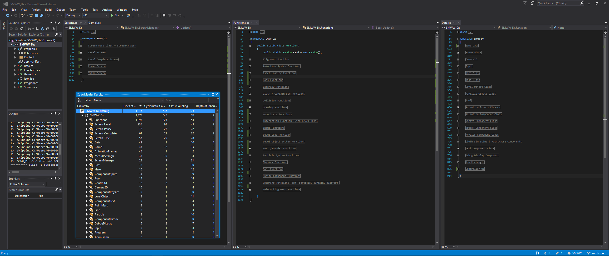

Super Mario : Wacky Worlds
A side-scrolling 2D platformer, where you can climb on curtains and ropes, using physics
to solve puzzles and fight a boss. Uses the assets from SMW for it's visuals and sounds.
The Game's public repo is located here: https://github.com/MrGrak/SMWW
A 5 minute playthrough is located here: https://youtu.be/nMDFliwyeG4

Total lines of code is 1,875 - without comments or regions. Around 4k loc with comments.
Repo was opened Feb 5th and closed Feb 23rd, after 92 commits, and 18 development days.
The game system design is functional mutable, paired with an oop based screenmanager and screens.
This makes it a blend of oop and functional, in a mutable paradigm.
The codebase is best read using a '3up' view, in any modern ide:
